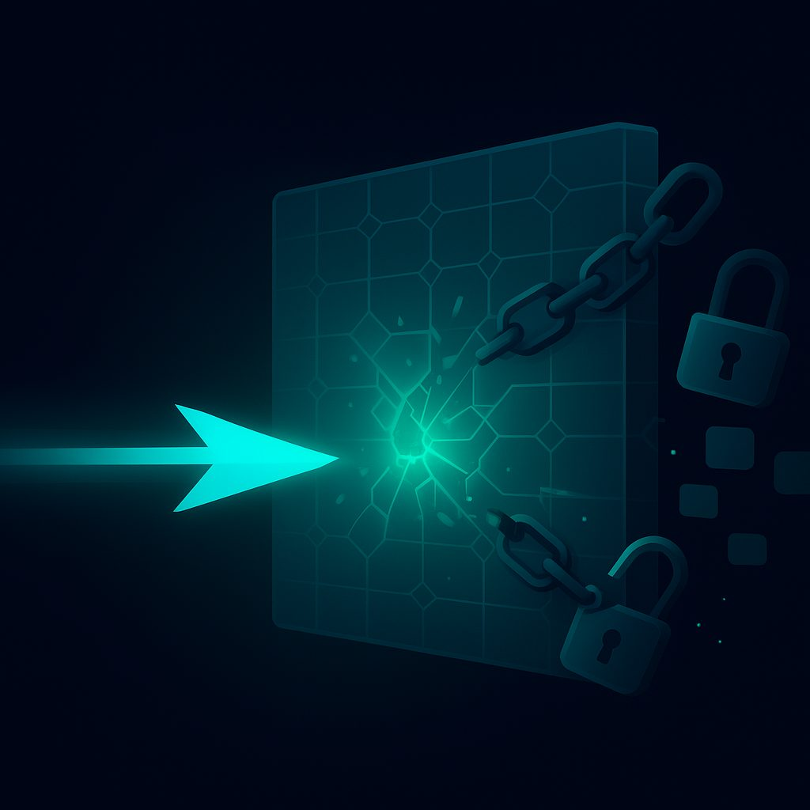

Обход блокировок в России: полный гайд 2026
В современном цифровом мире, где информация является ключевым ресурсом, доступ к ней становится критически важным. Однако, в условиях усиливающегося государственного контроля, все больше онлайн-ресурсов оказываются недоступными для пользователей из России. Эта статья призвана дать исчерпывающую информацию о том, какие сайты заблокированы, как работают эти блокировки, и, самое главное, как их эффективно обходить с помощью передовых технологий, таких как NoBorder VPN.
1. Какие сайты заблокированы в России в 2026 — актуальный список
К 2026 году ландшафт интернет-блокировок в России значительно изменился и продолжает развиваться. Список заблокированных или ограниченных ресурсов постоянно пополняется, затрагивая как крупные международные платформы, так и нишевые сервисы. Ниже представлен актуальный обзор наиболее значимых блокировок и ограничений:
- Социальные сети и медиаплатформы:
- Instagram (принадлежит Meta, признанной экстремистской организацией в РФ): Полностью заблокирован. Доступ возможен только через средства обхода блокировок.
- Facebook (принадлежит Meta, признанной экстремистской организацией в РФ): Полностью заблокирован. Аналогично Instagram, требует использования VPN или других инструментов.
- Twitter/X: Доступ к платформе значительно ограничен, наблюдаются постоянные замедления и перебои в работе, что делает полноценное использование затруднительным без обхода блокировок.
- TikTok: Хотя сама платформа не заблокирована, функционал для российских пользователей сильно ограничен (отсутствие возможности публиковать новые видео, ограниченный доступ к глобальному контенту). Для полноценного использования необходим VPN.
- YouTube: Официально не заблокирован, но подвергается систематическим замедлениям (троттлингу) со стороны провайдеров. Это особенно заметно при просмотре видео в высоком разрешении. Замедление может быть выборочным и зависеть от региона или провайдера. Эффективный просмотр без задержек требует использования VPN.
- Мессенджеры и коммуникационные сервисы:
- Discord: Хотя не подвергался полной блокировке, наблюдаются периодические проблемы с подключением, нестабильность работы голосовых чатов и замедление загрузки контента, что может быть связано с целенаправленным ограничением трафика.
- Telegram: Несмотря на попытки блокировки в прошлом, Telegram остается доступным, но его работа может быть нестабильной, особенно при высоких нагрузках или в моменты усиления контроля.
- ИИ-сервисы и инструменты:
- ChatGPT (OpenAI): Доступ к большинству ведущих зарубежных ИИ-сервисов, включая ChatGPT, ограничен для пользователей из России. Это связано как с санкционными ограничениями со стороны разработчиков, так и с целенаправленными блокировками. Для использования требуется VPN.
- Google Bard/Gemini, Midjourney и другие: Аналогично ChatGPT, доступ к этим платформам либо закрыт разработчиками, либо ограничен на уровне провайдеров.
- Западные медиа и новостные ресурсы:
- Множество сайтов крупных западных СМИ (например, BBC, Deutsche Welle, Meduza, Голос Америки, Радио Свобода и другие) заблокированы за распространение информации, признанной "недостоверной" или "экстремистской".
- Сервисы для разработчиков и IT-специалистов:
- Некоторые репозитории кода, документация, а также платформы для совместной работы могут быть недоступны в связи с санкциями или по другим причинам.
- VPN-сервисы:
- Сами VPN-сервисы, не соответствующие требованиям российского законодательства (то есть не подключенные к ФГИС), активно блокируются. Это создает дополнительные трудности для пользователей, поскольку даже "обычные" VPN могут быстро становиться неработоспособными.
Важно понимать, что список не является исчерпывающим и постоянно обновляется. Государственные органы применяют все более изощренные методы для ограничения доступа, что требует от пользователей использования продвинутых средств обхода блокировок.
2. Как работают блокировки — DPI, DNS-фильтрация, IP-блокировки
Для эффективного обхода блокировок необходимо понимать механизмы, лежащие в их основе. Российские провайдеры и государственные структуры используют целый арсенал технологий для ограничения доступа к нежелательным ресурсам. К 2026 году эти технологии достигли значительной зрелости и интеграции.
-
Глубокая инспекция пакетов (Deep Packet Inspection, DPI)
DPI является наиболее продвинутым и сложным методом блокировки. Это не просто фильтрация по IP-адресам, а полноценный анализ всего проходящего через сеть трафика. Устройства DPI устанавливаются на ключевых узлах сети интернет-провайдеров и способны:
- Анализировать заголовки пакетов: Определять протокол (HTTP, HTTPS, OpenVPN, WireGuard и т.д.), порты, IP-адреса источника и назначения.
- Анализировать содержимое пакетов (Payload): В некоторых случаях DPI может анализировать даже зашифрованный трафик, пытаясь определить его природу по косвенным признакам (например, по характерным паттернам инициализации VPN-соединений, размеру пакетов, частоте передачи).
- Распознавать сигнатуры VPN-протоколов: Современные DPI-системы обучены выявлять специфические "отпечатки" популярных VPN-протоколов, таких как OpenVPN, WireGuard, L2TP/IPSec. При обнаружении такой сигнатуры, соединение может быть сброшено или замедлено.
- Осуществлять троттлинг (замедление трафика): В случае с YouTube и другими видеосервисами, DPI может не блокировать доступ полностью, а ограничивать пропускную способность для определенных типов трафика или доменов, делая использование ресурса крайне некомфортным.
- Блокировать по доменному имени (SNI-фильтрация): Даже если сайт использует HTTPS, имя домена передается в незашифрованном виде в Server Name Indication (SNI) при установке соединения. DPI может перехватывать SNI и блокировать доступ к домену до начала шифрования.
DPI — это "глаза" и "уши" системы блокировок, позволяющие осуществлять точечный и динамичный контроль над трафиком.
-
DNS-фильтрация
Это один из самых простых и распространенных методов блокировки. Когда вы вводите доменное имя (например, youtube.com) в браузере, ваш компьютер отправляет запрос DNS-серверу, чтобы получить соответствующий IP-адрес. При DNS-фильтрации:
- Провайдер подменяет DNS-ответ: Вместо реального IP-адреса заблокированного ресурса, DNS-сервер провайдера возвращает IP-адрес страницы-заглушки или несуществующий IP-адрес.
- Запрет доступа к сторонним DNS-серверам: Провайдеры могут блокировать запросы к публичным DNS-серверам (например, Google DNS 8.8.8.8 или Cloudflare DNS 1.1.1.1), заставляя пользователей использовать свои собственные, фильтрующие DNS-серверы.
DNS-фильтрация легко обходится использованием сторонних DNS-серверов или протоколов, которые шифруют DNS-запросы (DNS-over-HTTPS, DNS-over-TLS).
-
IP-блокировки
Это прямое ограничение доступа к конкретным IP-адресам или диапазонам IP-адресов. Происходит это следующим образом:
- Внесение IP-адресов в черный список: Реестр запрещенных сайтов содержит не только доменные имена, но и IP-адреса. Провайдеры получают эти списки и настраивают свое сетевое оборудование (маршрутизаторы, файрволы) на блокировку трафика к этим адресам.
- Блокировка целых подсетей: Если ресурс использует облачные сервисы или CDN, IP-адреса которых постоянно меняются или используются для множества других сервисов, блокировка может затрагивать целые диапазоны IP-адресов, что приводит к "сопутствующим" блокировкам (недоступности других, не запрещенных ресурсов).
IP-блокировки эффективны против статических адресов, но менее эффективны против крупных платформ, использующих динамические IP или обширные сети доставки контента.
-
Блокировка портов
Иногда провайдеры могут блокировать или ограничивать трафик на определенных сетевых портах, которые часто используются VPN-протоколами (например, порт 1194 для OpenVPN). Это менее распространенный, но существующий метод.
Современная система блокировок в России представляет собой многоуровневый комплекс, где DPI играет центральную роль, дополняясь DNS-фильтрацией и IP-блокировками. Для успешного обхода необходимо использовать решения, способные противостоять всем этим уровням защиты.
3. Способы обхода блокировок — VPN, прокси, Tor, DNS-over-HTTPS — сравнение
Существует несколько основных подходов к обходу интернет-блокировок, каждый из которых имеет свои преимущества и недостатки. Выбор конкретного метода зависит от требуемого уровня безопасности, скорости и простоты использования.
-
Виртуальная частная сеть (VPN)
VPN создает зашифрованный туннель между вашим устройством и удаленным сервером. Весь ваш трафик проходит через этот туннель, маскируя ваш реальный IP-адрес и местоположение. Для внешнего наблюдателя (включая провайдера и DPI) ваш трафик выглядит как исходящий от VPN-сервера.
- Плюсы:
- Полное шифрование трафика.
- Скрытие реального IP-адреса и местоположения.
- Обход большинства видов блокировок (DNS, IP, SNI).
- Относительно высокая скорость (зависит от сервера и протокола).
- Минусы:
- Стандартные VPN-протоколы (OpenVPN, WireGuard) могут быть обнаружены и заблокированы продвинутыми DPI-системами.
- Может замедлять скорость соединения из-за шифрования и маршрутизации.
- Некоторые VPN-сервисы могут вести логи активности пользователей.
- Платные VPN-сервисы требуют подписки.
- Применимость: Универсальный инструмент для большинства задач, но требует использования продвинутых протоколов в условиях жестких блокировок.
- Плюсы:
-
Прокси-серверы
Прокси-сервер выступает посредником между вашим устройством и целевым сайтом. Ваш запрос сначала идет на прокси, а затем прокси перенаправляет его на сайт. Ответ от сайта также проходит через прокси.
- HTTP/HTTPS Прокси: Работают только для веб-трафика. HTTPS-прокси шифруют соединение между вами и прокси, но не всегда между прокси и целевым сайтом.
- SOCKS5 Прокси: Более универсальны, могут работать с любым трафиком (не только HTTP/HTTPS), но не обеспечивают шифрования по умолчанию.
- Плюсы:
- Скрытие реального IP-адреса.
- Может быть дешевле или бесплатнее, чем VPN.
- Некоторые прокси могут быть быстрее, если не используется шифрование.
- Минусы:
- Часто не обеспечивают сквозного шифрования, что делает трафик уязвимым для перехвата и анализа.
- Могут быть легко обнаружены и заблокированы, особенно HTTP-прокси.
- Менее надежны, часто имеют низкую скорость и нестабильное соединение.
- Оператор прокси-сервера видит весь ваш трафик.
- Не обходят блокировки на уровне приложений, только на уровне браузера (для HTTP/HTTPS).
- Применимость: Для обхода простых DNS-блокировок или доступа к сайтам, не требующим высокой безопасности. Не подходит для серьезных блокировок.
-
Tor (The Onion Router)
Tor — это децентрализованная сеть, которая направляет ваш интернет-трафик через множество случайно выбранных узлов (ретрансляторов) по всему миру. Каждый узел "снимает" один слой шифрования, как луковица, раскрывая следующий пункт назначения. Ваш реальный IP-адрес скрывается, а трафик становится практически не отслеживаемым.
- Плюсы:
- Высочайший уровень анонимности и приватности.
- Эффективно обходит практически любые блокировки.
- Бесплатно.
- Минусы:
- Очень низкая скорость соединения из-за многократной маршрутизации и шифрования.
- Не подходит для потокового видео, онлайн-игр или быстрой загрузки.
- Многие сайты блокируют трафик из сети Tor из-за опасений по поводу злоупотреблений.
- Использование Tor может привлечь внимание провайдера или контролирующих органов.
- Применимость: Для доступа к особо чувствительной информации, журналистской деятельности, или в случаях, когда анонимность превыше скорости.
- Плюсы:
-
DNS-over-HTTPS (DoH) и DNS-over-TLS (DoT)
Эти протоколы шифруют ваши DNS-запросы,